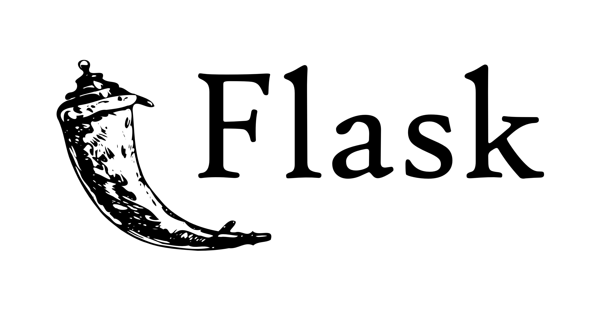
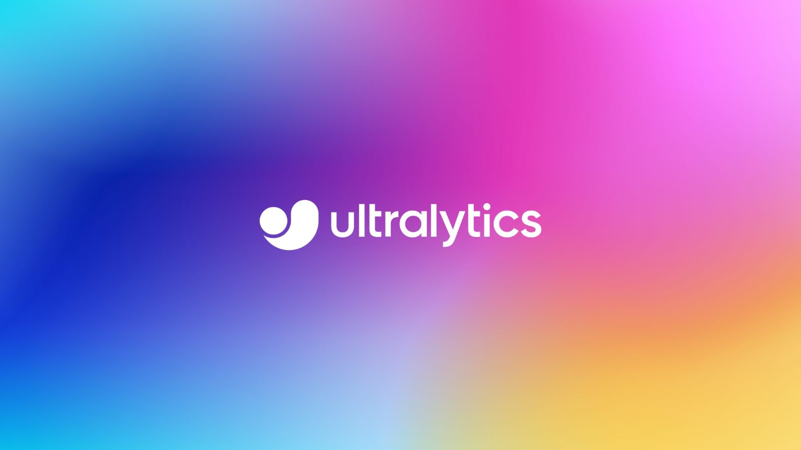

Sistema di rilevamento fumi con sistema CNN
-

Python
Python è un linguaggio di programmazione ad alto livello, interpretato e general-purpose. È noto per la sua sintassi leggibile e intuitiva, che favorisce la scrittura di codice chiaro e conciso. Python è ampiamente utilizzato in diversi settori, come lo sviluppo web, l'analisi dei dati, l'intelligenza artificiale e molto altro. Offre una vasta libreria standard e una vasta gamma di librerie di terze parti che rendono possibile lo sviluppo di una vasta gamma di applicazioni.
-

Flask
Flask è un framework leggero e flessibile per lo sviluppo di applicazioni web in Python. È conosciuto come un micro-framework perché fornisce solo le funzionalità essenziali per creare applicazioni web, consentendo allo sviluppatore di avere un maggiore controllo sul progetto. Flask offre un'architettura semplice e modulare, consentendo di aggiungere funzionalità in modo graduale. È ampiamente utilizzato per creare API RESTful, siti web e applicazioni web di piccole e medie dimensioni. Flask supporta l'utilizzo di template HTML per generare pagine dinamiche e offre un sistema di routing per gestire le richieste dei client.
-

GoogleCollab
Google Colab è una piattaforma di notebook interattivi basata su cloud che consente di scrivere e eseguire codice Python. Offre l'accesso gratuito alle risorse di calcolo, come CPU, GPU e TPU, ed è particolarmente adatto per progetti di machine learning e data science. Con Google Colab, è possibile eseguire il codice in ambienti virtuali senza dover configurare l'ambiente di sviluppo localmente.
-

Roboflow
Roboflow è una piattaforma per la preparazione dei dati di machine learning. Consente di importare, etichettare e preparare i dati di addestramento in modo efficiente. Roboflow supporta diversi formati di dati, come immagini, video e dati tabulari, e offre strumenti per etichettare gli oggetti di interesse nelle immagini e generare i file di addestramento necessari.
-

NumPy
NumPy è una libreria fondamentale per il calcolo scientifico in Python. Offre supporto per array multidimensionali e funzioni di alto livello per operazioni matematiche, manipolazione dei dati e calcolo scientifico. NumPy fornisce un'implementazione efficiente delle operazioni di algebra lineare, trasformate di Fourier e altro ancora. È ampiamente utilizzato nelle applicazioni di data science, machine learning e analisi numerica grazie alla sua efficienza e versatilità.
-

OpenCv
OpenCV (Open Source Computer Vision Library) è una libreria open source ampiamente utilizzata per il computer vision e l'elaborazione delle immagini. Fornisce un vasto insieme di algoritmi e strumenti per manipolare, analizzare e comprendere le immagini e i video. Alcune delle caratteristiche principali di OpenCV per Python includono: 1) l'accesso facile e veloce ai pixel delle immagini, 2) il supporto per il caricamento, la visualizzazione e il salvataggio di immagini e video, 3) la manipolazione delle immagini, come il ridimensionamento, il ritaglio e la rotazione, 4) l'applicazione di filtri e trasformazioni alle immagini, 5) il rilevamento di oggetti, volti e caratteristiche nelle immagini, 6) il riconoscimento di pattern e l'apprendimento automatico, 7) l'integrazione con altre librerie di Python per lo sviluppo di applicazioni complete di computer vision. OpenCV in Python è ampiamente utilizzato in settori come la robotica, la sicurezza, la visione artificiale e la realtà aumentata.
-

Ultralytics
Ultralytics è una libreria open source per il deep learning sviluppata in Python, progettata per semplificare lo sviluppo e l'implementazione di modelli di intelligenza artificiale avanzati. Alcune delle caratteristiche salienti di Ultralytics includono: 1) l'integrazione diretta con PyTorch, un popolare framework di deep learning, 2) l'accesso a una vasta gamma di modelli pre-addestrati per compiti comuni come la classificazione di immagini, la rilevazione di oggetti e l'elaborazione del linguaggio naturale, 3) la facilità di utilizzo grazie a una sintassi intuitiva e semplificata, 4) la possibilità di addestrare i modelli su grandi set di dati distribuiti, 5) l'elaborazione rapida delle immagini e dei video grazie all'ottimizzazione di GPU e TPU, 6) il supporto per l'annotazione e la visualizzazione dei risultati delle inferenze in modo interattivo, 7) la possibilità di integrare modelli di intelligenza artificiale nelle applicazioni Python esistenti, 8) una comunità attiva e supporto continuo da parte degli sviluppatori di Ultralytics. Ultralytics è una potente libreria per lo sviluppo di applicazioni di deep learning in Python, offrendo strumenti e risorse per sfruttare appieno il potenziale dell'intelligenza artificiale.
-
UIkit
UIkit è un framework front-end leggero e altamente personalizzabile per la creazione di interfacce utente moderne e reattive. Offre una vasta gamma di componenti predefiniti, come bottoni, modali, form, navigazione e molto altro, che possono essere facilmente integrati nei progetti web. Con UIkit, è possibile creare layout flessibili e responsive utilizzando un sistema di griglia semplice e intuitivo. Il framework fornisce anche funzionalità avanzate come animazioni, effetti di transizione, supporto per touch e mobile, e una sintassi chiara e pulita basata su classi CSS. UIkit è altamente personalizzabile grazie alla sua struttura modulare e offre anche la possibilità di estendere le funzionalità tramite plugin. È ampiamente utilizzato dagli sviluppatori per creare interfacce utente moderne, intuitive e di alta qualità.